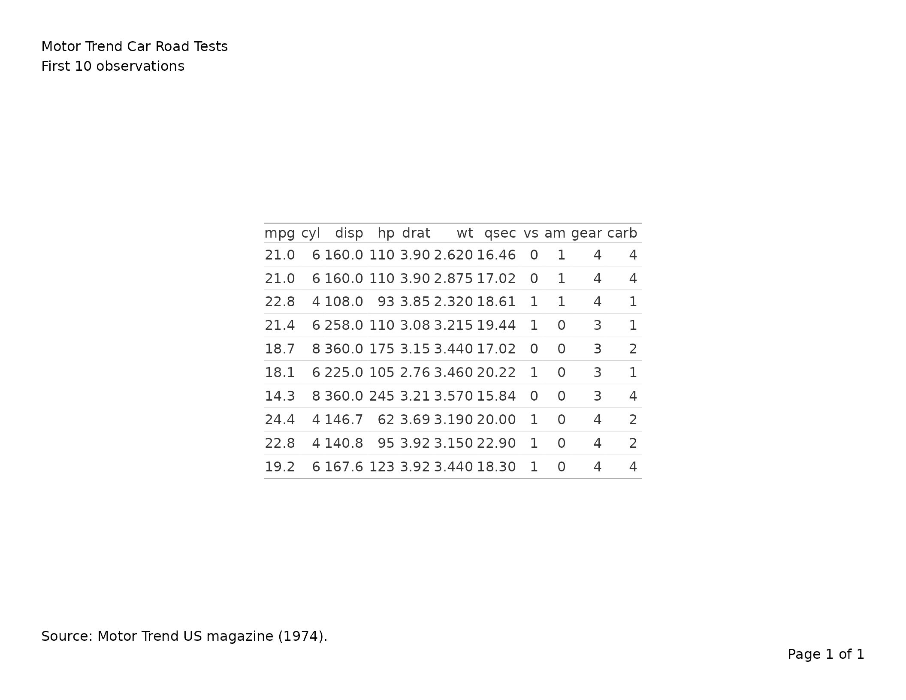
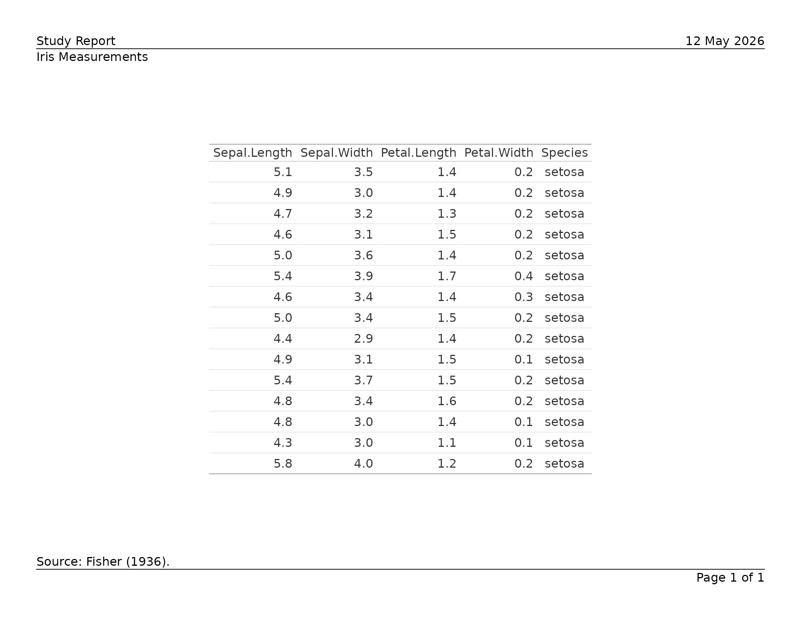
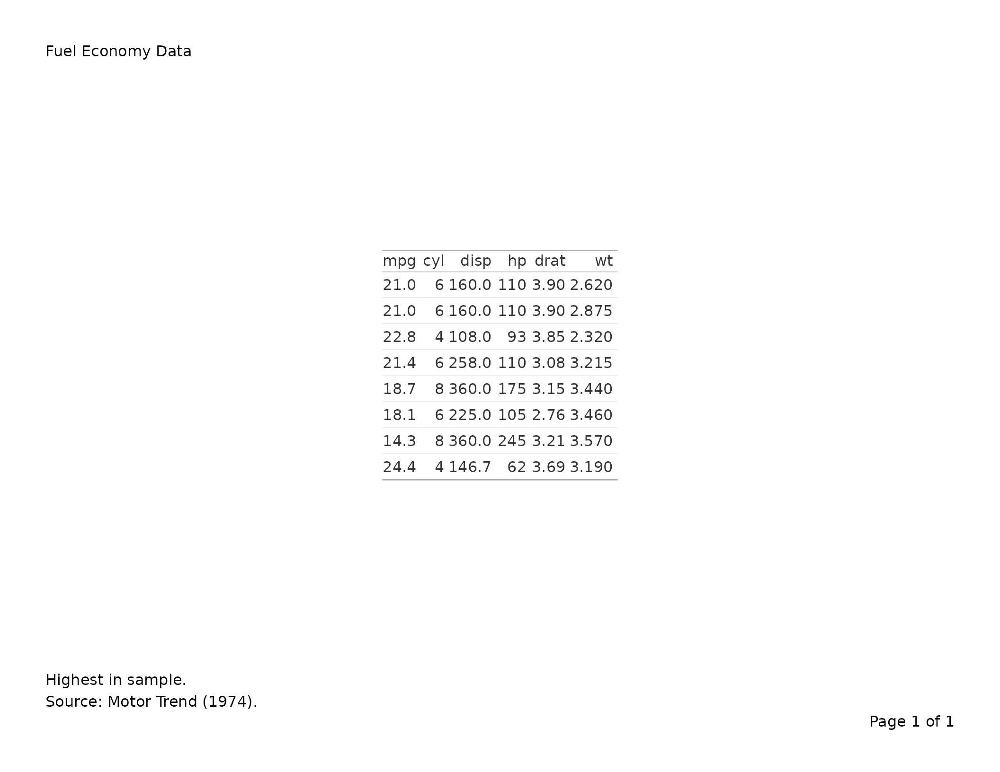
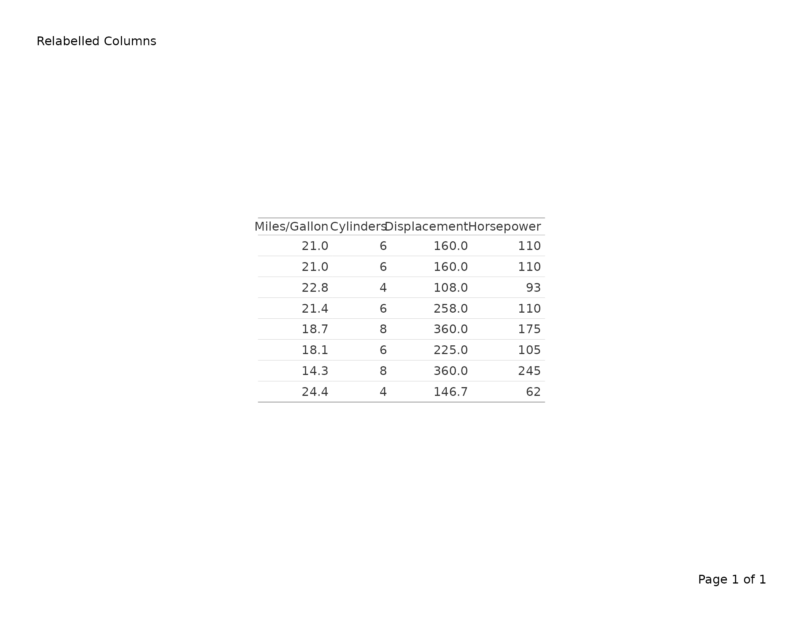
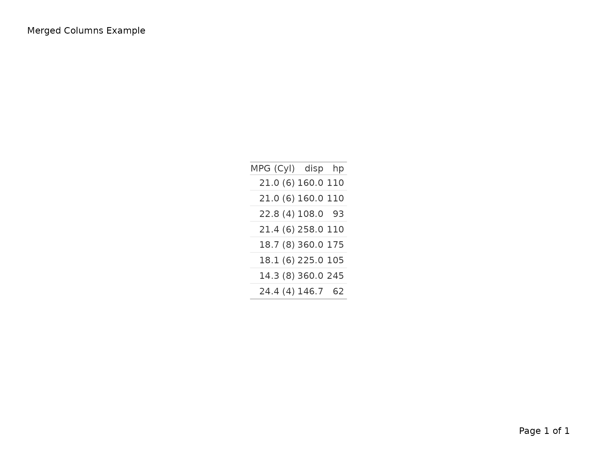
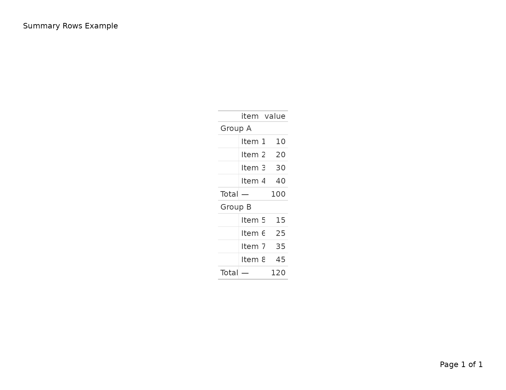
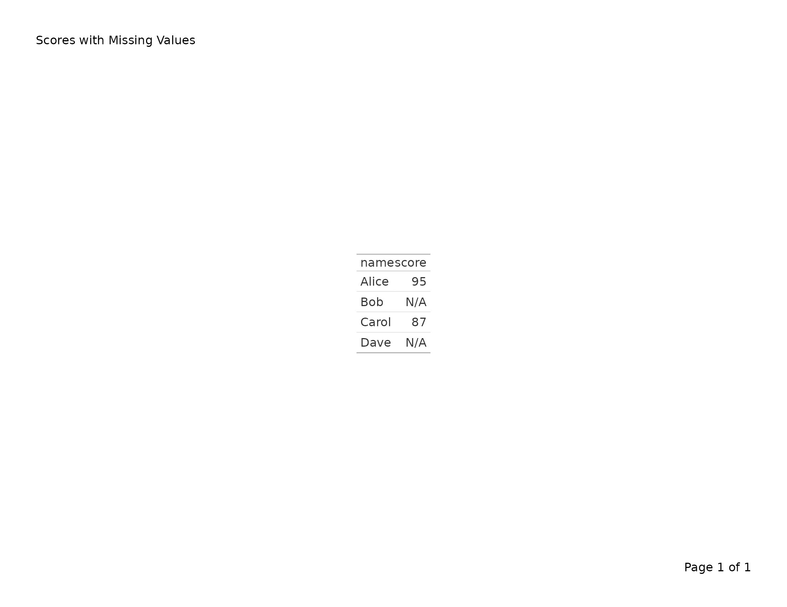
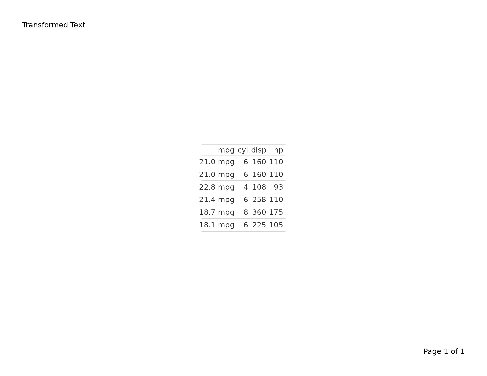
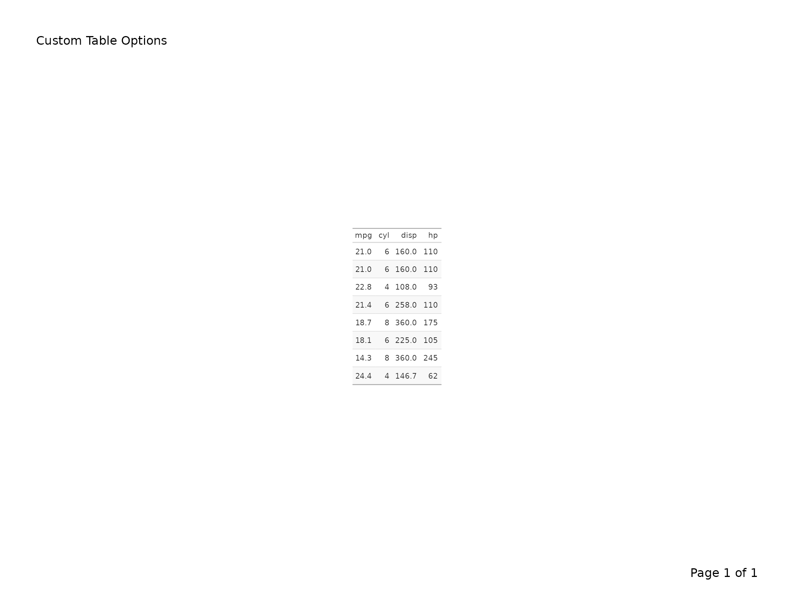
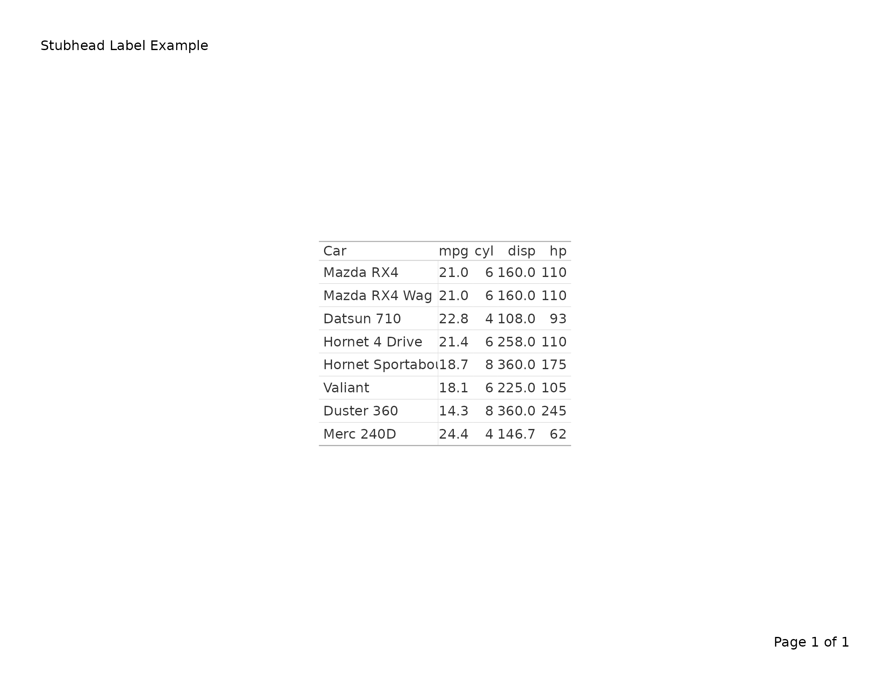

Exporting gt Tables to PDF
v05-gt_tables.RmdThis vignette covers export_tfl() as used with
gt table objects. For data-frame tables built with
tfl_table(), see
vignette("v02-tfl_table_intro"). For figure output, see
vignette("v01-figure_output").
Basic usage
Pass a gt_tbl object directly to
export_tfl(). The title, subtitle, source notes, and
footnotes are automatically extracted and placed in writetfl’s
annotation zones (caption and footnote), while the table body is
rendered as a grid grob via gt::as_gtable().
tbl <- gt(head(mtcars, 10)) |>
tab_header(
title = "Motor Trend Car Road Tests",
subtitle = "First 10 observations"
) |>
tab_source_note("Source: Motor Trend US magazine (1974).")
export_tfl(tbl, preview = TRUE)
Why annotations are extracted
gt normally renders its title, subtitle, source notes, and footnotes
inside the table grob itself. When placed inside writetfl’s page layout,
this would cause duplication — the annotations would appear both in the
grob and in writetfl’s header/footer zones. To avoid this,
export_tfl() extracts gt annotations into writetfl’s
annotation fields and strips them from the gt object before converting
to a grob.
The mapping is:
| gt annotation | writetfl field |
|---|---|
tab_header(title = ...) |
caption (first line) |
tab_header(subtitle = ...) |
caption (second line, joined with \n) |
tab_source_note(...) |
footnote |
tab_footnote(...) |
footnote (combined with source notes) |
Adding page layout elements
All of writetfl’s page layout arguments work with gt tables. Pass
them via ... just as you would for figures.
tbl <- gt(head(iris, 15)) |>
tab_header(title = "Iris Measurements") |>
tab_source_note("Source: Fisher (1936).")
export_tfl(
tbl,
preview = TRUE,
header_left = "Study Report",
header_right = format(Sys.Date(), "%d %b %Y"),
header_rule = TRUE,
footer_rule = TRUE
)
Multiple gt tables
Pass a list of gt_tbl objects to produce a multi-page
PDF with one table per page. Each table’s annotations are extracted
independently.
tbl1 <- gt(head(mtcars, 10)) |>
tab_header(title = "Table 1. First 10 rows")
tbl2 <- gt(tail(mtcars, 10)) |>
tab_header(title = "Table 2. Last 10 rows")
export_tfl(
list(tbl1, tbl2),
file = "two-tables.pdf",
header_left = "Appendix",
header_rule = TRUE
)Footnotes and source notes
Cell-level footnotes added via tab_footnote() and source
notes added via tab_source_note() are combined into
writetfl’s footnote zone.
tbl <- gt(head(mtcars[, 1:6], 8)) |>
tab_header(title = "Fuel Economy Data") |>
tab_footnote(
"Highest in sample.",
locations = cells_body(columns = mpg, rows = mpg == max(mpg))
) |>
tab_source_note("Source: Motor Trend (1974).")
export_tfl(tbl, preview = TRUE)
Automatic pagination for tall tables
When a gt table is too tall to fit on a single page,
export_tfl() splits it across multiple pages automatically.
Row group boundaries are respected — a group is never split across
pages.
# A large table that won't fit on one page
big_data <- data.frame(
group = rep(c("Treatment A", "Treatment B", "Placebo"), each = 20),
subject = paste0("SUBJ-", sprintf("%03d", 1:60)),
value = round(rnorm(60, 100, 15), 1)
)
tbl <- gt(big_data, groupname_col = "group") |>
tab_header(title = "Subject-Level Results") |>
tab_source_note("Source: Clinical Trial XY-001.")
export_tfl(
tbl,
file = "paginated.pdf",
header_left = "Study Report",
header_rule = TRUE,
footer_rule = TRUE
)Each page carries the same caption and footnote from the original gt object. The column headers are repeated on every page since each page is a complete gt sub-table.
How pagination works
- The full table is converted to a grob and its height measured.
- If it fits within the available content area, a single page is produced.
- If it overflows, rows are split into groups:
-
With
tab_row_group(): groups of rows defined bytab_row_group()are kept together. Pages are filled greedily by groups. - Without row groups: each row is treated as its own unit, allowing fine-grained page breaks.
-
With
- For each page chunk, a sub-table is built preserving column labels,
fmt_*()formatting,tab_style()styling, column spanners, merged columns, and summary rows.
Ungrouped tables
Tables without explicit row groups are split row-by-row:
tbl <- gt(mtcars) |>
tab_header(title = "All 32 Cars") |>
fmt_number(columns = mpg, decimals = 1)
export_tfl(tbl, file = "all-cars.pdf")Preserved gt features
The following gt features are preserved through pagination:
| Feature | Preserved? | Notes |
|---|---|---|
tab_header() |
Yes | Extracted as writetfl caption |
tab_source_note() |
Yes | Extracted as writetfl footnote |
tab_footnote() |
Yes | Combined with source notes |
tab_row_group() |
Yes | Groups kept together across pages |
tab_spanner() |
Yes | Column spanners repeated on every page |
fmt_*() functions |
Yes | Re-indexed per page subset |
tab_style() |
Yes | Re-indexed per page subset |
cols_merge() |
Yes | Carried through boxhead |
cols_label() |
Yes | Carried through boxhead |
summary_rows() |
Yes | Filtered to groups present on each page |
sub_*() functions |
Yes | Re-indexed per page subset |
text_transform() |
Yes | Re-indexed per page subset |
tab_options() |
Yes | Copied to every page |
tab_stubhead() |
Yes | Copied to every page |
gt(locale = ...) |
Yes | Locale preserved through pagination |
tbl <- gt(mtcars[, 1:6]) |>
tab_header(title = "Motor Trend Data") |>
tab_spanner(label = "Performance", columns = c(mpg, cyl, disp)) |>
tab_spanner(label = "Engine", columns = c(hp, drat, wt)) |>
fmt_number(columns = mpg, decimals = 1) |>
tab_style(
style = cell_fill(color = "lightyellow"),
locations = cells_body(columns = mpg)
)
export_tfl(tbl, file = "styled.pdf")Column labels
Custom column labels set with cols_label() are preserved
through pagination. Labels are stored in the boxhead metadata and
carried to every page.
tbl <- gt(head(mtcars[, 1:4], 8)) |>
tab_header(title = "Relabelled Columns") |>
cols_label(
mpg = "Miles/Gallon",
cyl = "Cylinders",
disp = "Displacement",
hp = "Horsepower"
)
export_tfl(tbl, preview = TRUE)
Merged columns
cols_merge() combines the display of two or more columns
into one. This is carried through the boxhead and works across paginated
pages.
tbl <- gt(head(mtcars[, 1:4], 8)) |>
tab_header(title = "Merged Columns Example") |>
cols_merge(
columns = c(mpg, cyl),
pattern = "{1} ({2})"
) |>
cols_label(mpg = "MPG (Cyl)")
export_tfl(tbl, preview = TRUE)
Summary rows
summary_rows() adds group-level summaries. During
pagination, summaries are filtered to groups present on each page.
df <- data.frame(
group = rep(c("Group A", "Group B"), each = 4),
item = paste0("Item ", 1:8),
value = c(10, 20, 30, 40, 15, 25, 35, 45)
)
tbl <- gt(df, groupname_col = "group") |>
tab_header(title = "Summary Rows Example") |>
summary_rows(
groups = everything(),
columns = value,
fns = list(Total = ~ sum(.))
)
export_tfl(tbl, preview = TRUE)
Missing value substitutions
sub_missing() and other sub_*() functions
replace cell values with display text. These are re-indexed per page
subset during pagination.
df <- data.frame(
name = c("Alice", "Bob", "Carol", "Dave"),
score = c(95, NA, 87, NA)
)
tbl <- gt(df) |>
tab_header(title = "Scores with Missing Values") |>
sub_missing(columns = score, missing_text = "N/A")
export_tfl(tbl, preview = TRUE)
Text transforms
text_transform() applies arbitrary functions to cell
text. Transforms are re-indexed so only rows present on each page are
processed.
tbl <- gt(head(mtcars[, 1:4], 6)) |>
tab_header(title = "Transformed Text") |>
text_transform(
locations = cells_body(columns = mpg),
fn = function(x) paste0(x, " mpg")
)
export_tfl(tbl, preview = TRUE)
Table options
tab_options() settings (font size, row striping, etc.)
are preserved on every paginated page.
tbl <- gt(head(mtcars[, 1:4], 8)) |>
tab_header(title = "Custom Table Options") |>
tab_options(
table.font.size = px(10),
row.striping.include_table_body = TRUE
)
export_tfl(tbl, preview = TRUE)
Stub head labels
When row names are used as a stub column, tab_stubhead()
sets a label for that column. The label is preserved on every paginated
page.
tbl <- gt(head(mtcars[, 1:4], 8), rownames_to_stub = TRUE) |>
tab_header(title = "Stubhead Label Example") |>
tab_stubhead(label = "Car")
export_tfl(tbl, preview = TRUE)
Locale support
When a locale is set via gt(locale = ...), it is
preserved through pagination so that number formatting respects locale
conventions.
tbl <- gt(head(mtcars[, 1:4], 8), locale = "de") |>
tab_header(title = "German Locale Formatting") |>
fmt_number(columns = mpg, decimals = 1)
export_tfl(tbl, file = "locale.pdf")